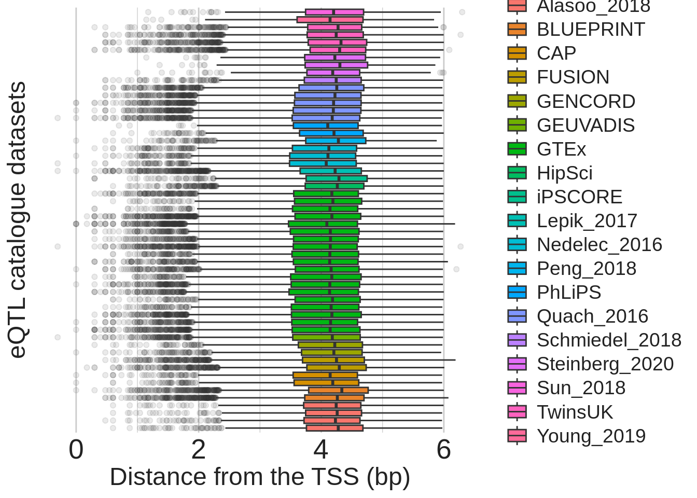
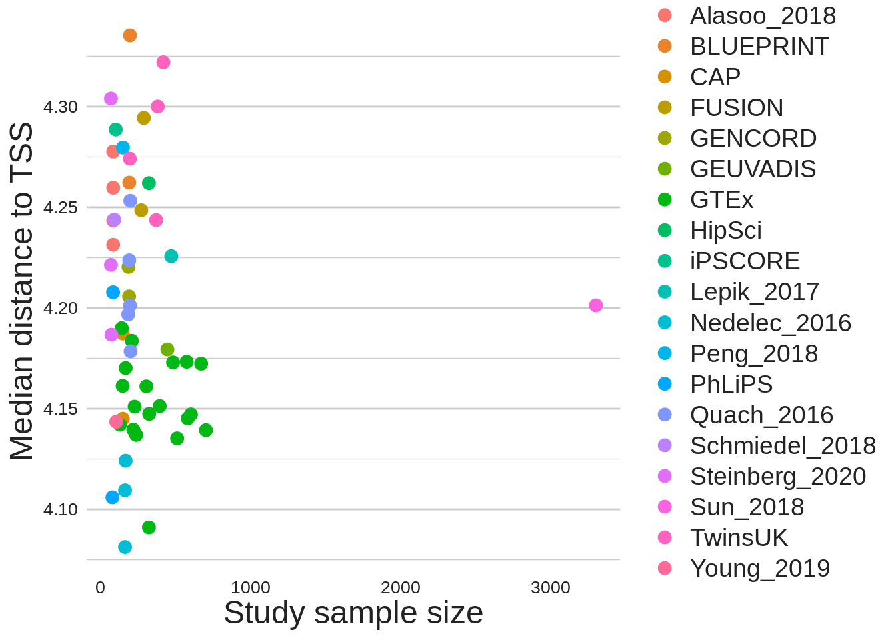
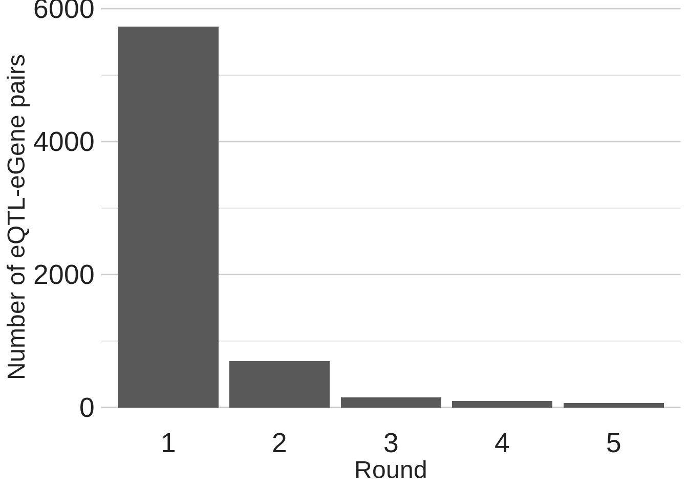
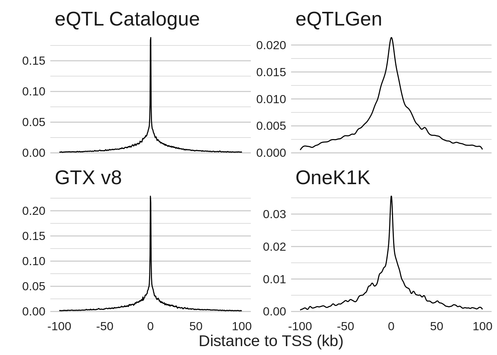

library(readr)
library(ggplot2)
library(tidyr)
library(tools)
library(forcats)
library(janitor)
library(ggupset)
library(purrr)
library(dplyr, warn.conflicts = FALSE)
source(here::here("code", "plot-utils.R"))
conflicted::conflict_prefer("select", "dplyr")
conflicted::conflict_prefer("filter", "dplyr")eQTL distribution analysis
eqtl_catalogue_data <- readRDS(here::here("data", "processed-data", "eqtl-catalogue.rds"))
gtex_data <- readRDS(here::here("data", "processed-data", "gtex.rds"))
adipos_express_marignal_data <- readRDS(here::here("data", "processed-data", "adipos-express-marginal.rds"))
eqtlgen_data <- readRDS(here::here("data", "processed-data", "eqtlgen.rds"))
onek1k_data <- readRDS(here::here("data", "processed-data", "onek1k.rds"))eQTL catalouge
eqtl_catalogue_data |>
mutate(abs_tss_distance = log10(abs_tss_distance)) |>
ggplot(aes(file, abs_tss_distance, fill = study_label)) +
geom_boxplot(outlier.alpha = 0.1) +
coord_flip() +
labs(
x = "eQTL catalogue datasets",
y = "Distance from the TSS (bp)",
fill = "Study"
) +
theme_jp_vgrid() +
theme(axis.text.y = element_blank(),
axis.ticks.y = element_blank(),
legend.position = "right",
legend.text = element_text(size = 14))Warning: Removed 18 rows containing non-finite values (`stat_boxplot()`).
eqtl_catalogue_data |>
mutate(abs_tss_distance = log10(abs_tss_distance)) |>
summarise(abs_tss_distance = median(abs_tss_distance),
.by = c(file, sample_size, study_label)) |>
ggplot(aes(sample_size, abs_tss_distance, colour = study_label)) +
geom_point(size = 3) +
labs(
x = "Study sample size",
y = "Median distance to TSS",
colour = "Study"
) +
theme_jp() +
theme(axis.text = element_text(size = 10),
legend.position = "right",
legend.text = element_text(size = 14))
GTEx
gtex_data |>
mutate(tissue = fct_rev(factor(tissue))) |>
mutate(abs_tss_distance = log10(abs_tss_distance)) |>
ggplot(aes(tissue, abs_tss_distance)) +
geom_boxplot(fill = "grey", outlier.alpha = 0.1) +
labs(
x = "Tissue",
y = "Distance to TSS"
) +
coord_flip() +
theme_jp_vgrid() +
theme(axis.text = element_text(size = 8))Warning: Removed 56 rows containing non-finite values (`stat_boxplot()`).AdipoExpress marginal
adipos_express_marignal_data |>
ggplot(aes(file, abs_tss_distance)) +
geom_boxplot(fill = "grey", outlier.alpha = 0.1) +
labs(
x = "Chromosome",
y = "Distance to TSS"
) +
coord_flip() +
theme_bw()Onek1k
By combination of cell types
combination_onek1k_data <- onek1k_data |>
summarise(cell_type_collapsed = paste0(sort(unlist(cell_type)), collapse="-"),
.by = c(gene_id, abs_tss_distance, round))
most_common_cell_types <- combination_onek1k_data |>
count(cell_type_collapsed) |>
arrange(desc(n)) |>
slice_head(n = 30) |>
pull(cell_type_collapsed)
single_cell_types <- keep(most_common_cell_types,
\(x) !grepl("-", x, fixed = TRUE))
combination_onek1k_data |>
mutate(abs_tss_distance = log10(abs_tss_distance)) |>
filter(cell_type_collapsed %in% most_common_cell_types) |>
mutate(cell_type_collapsed = fct_reorder(
factor(cell_type_collapsed),
abs_tss_distance,
.desc = TRUE)
) |>
ggplot(aes(x = cell_type_collapsed, y = abs_tss_distance)) +
geom_boxplot() +
axis_combmatrix(sep = "-", levels = single_cell_types) +
labs(
x = "",
y = "log(10) abs tss distance"
) +
theme_jp() +
theme(axis.text = element_text(size = 12),
axis.title.y = element_text(vjust=-30))Warning: Removed 1 rows containing non-finite values (`stat_boxplot()`).By individual cell type
onek1k_data |>
filter(n_cell_types == 1) |>
mutate(cell_type = unlist(cell_type)) |>
mutate(abs_tss_distance = log10(abs_tss_distance)) |>
mutate(cell_type = fct_reorder(factor(cell_type), abs_tss_distance)) |>
ggplot(aes(cell_type, abs_tss_distance)) +
geom_boxplot() +
coord_flip() +
labs(
y = "Distance",
x = "Cell type"
) +
theme_jp_vgrid() +
theme(axis.text = element_text(size = 10))By number of cell types for eQTL
onek1k_data |>
mutate(abs_tss_distance = log10(abs_tss_distance)) |>
ggplot(aes(factor(n_cell_types), abs_tss_distance)) +
geom_boxplot(outlier.alpha = 0.1) +
labs(
x = "Number of cell types with eQTL",
y = "Distance of eQTL SNP to eGene TSS (log10 bp)",
) +
theme_jp()Warning: Removed 1 rows containing non-finite values (`stat_boxplot()`).onek1k_data |>
ggplot(aes(factor(n_cell_types))) +
geom_bar() +
labs(
x = "Number of cell types with eQTL",
y = "Number of eQTL-eGene pairs",
) +
theme_jp()By round of conditional analysis
onek1k_data |>
mutate(abs_tss_distance = log10(abs_tss_distance)) |>
ggplot(aes(factor(round), abs_tss_distance)) +
geom_boxplot(fill = "grey", outlier.alpha = 0.1) +
labs(
x = "Round of conditional analysis",
y = "Distance of eQTL variant to eGene TSS (log10 bp)",
) +
theme_jp()Warning: Removed 1 rows containing non-finite values (`stat_boxplot()`).onek1k_data |>
ggplot(aes(factor(round))) +
geom_bar() +
labs(
x = "Round",
y = "Number of eQTL-eGene pairs",
) +
theme_jp()
Across studies
bind_rows(
gtex_data |>
select(abs_tss_distance) |>
mutate(study = "GTX v8"),
eqtlgen_data |>
select(abs_tss_distance) |>
mutate(study = "eQTLGen"),
eqtl_catalogue_data |>
select(abs_tss_distance) |>
mutate(study = "eQTL Catalogue"),
adipos_express_marignal_data |>
select(abs_tss_distance) |>
mutate(study = "AdiposExpress\n (Marginal)"),
onek1k_data |>
filter(round == 1) |>
select(abs_tss_distance) |>
mutate(study = "OneK1K")
) |>
mutate(log10_abs_tss_distance = log10(abs_tss_distance)) |>
ggplot(aes(study, log10_abs_tss_distance)) +
geom_violin(fill = "grey") +
geom_boxplot(outlier.alpha = 0.1) +
labs(
x = "Study",
y = "Absolute Log(10) distance from variant to TSS",
) +
coord_flip() +
theme_jp_vgrid()Warning: Removed 76 rows containing non-finite values (`stat_ydensity()`).Warning: Removed 76 rows containing non-finite values (`stat_boxplot()`).onek1k_data# A tibble: 6,749 × 9
gene_id tss_distance round cell_type_collapsed cell_type n_cell_types
<chr> <dbl> <dbl> <chr> <list> <int>
1 ENSG00000001561 -30457 1 Natural Killer Cell <chr [1]> 1
2 ENSG00000001561 731144 2 Dendritic Cell <chr [1]> 1
3 ENSG00000002549 -6032. 1 Classic Monocyte <chr [1]> 1
4 ENSG00000002549 5396. 1 Non-classic Monocy… <chr [1]> 1
5 ENSG00000002822 -307020 1 CD8 Effector memory <chr [1]> 1
6 ENSG00000002822 -243222 1 Non-classic Monocy… <chr [1]> 1
7 ENSG00000002822 -195349 1 Natural Killer Cell <chr [1]> 1
8 ENSG00000002919 -32379 1 CD8 Effector memory <chr [1]> 1
9 ENSG00000002933 -21895 1 Non-classic Monocy… <chr [1]> 1
10 ENSG00000002933 -21895 2 Dendritic Cell <chr [1]> 1
# ℹ 6,739 more rows
# ℹ 3 more variables: abs_tss_distance <dbl>, log10_tss_distance <dbl>,
# log10_abs_tss_distance <dbl>onek1k_data |>
filter(abs(tss_distance) <= 150000) |>
ggplot(aes(tss_distance)) +
geom_density(bw = "SJ") +
facet_wrap(~ round) dens <- eqtlgen_data |>
filter(abs(tss_distance) <= 300000) |>
pull(tss_distance) |>
density(bw = "SJ")
dens_data <- tibble(x = dens$x, y = dens$y)
saveRDS(dens_data, here::here("output", "data", "density.rds"))log10_dens <- eqtlgen_data |>
filter(log10_abs_tss_distance <= log10(300000)) |>
filter(log10_abs_tss_distance > 1) |>
pull(log10_abs_tss_distance) |>
density(bw = "SJ")all_studies_data <- bind_rows(
gtex_data |>
mutate(study = "GTX v8"),
eqtlgen_data |>
mutate(study = "eQTLGen"),
eqtl_catalogue_data |>
mutate(study = "eQTL Catalogue"),
onek1k_data |>
filter(round == 1) |>
mutate(study = "OneK1K")
)all_studies_data |>
filter(abs(tss_distance) <= 100000) |>
mutate(kb = tss_distance / 1000) |>
ggplot(aes(kb)) +
geom_density(bw = "SJ") +
facet_wrap(~ study, scales = "free_y") +
theme_jp() +
labs(
y = "",
x = "Distance to TSS (kb)"
) +
theme(
axis.text = element_text(size = 12),
axis.title = element_text(size = 16),
strip.text = element_text(size = 20, hjust = 0)
)